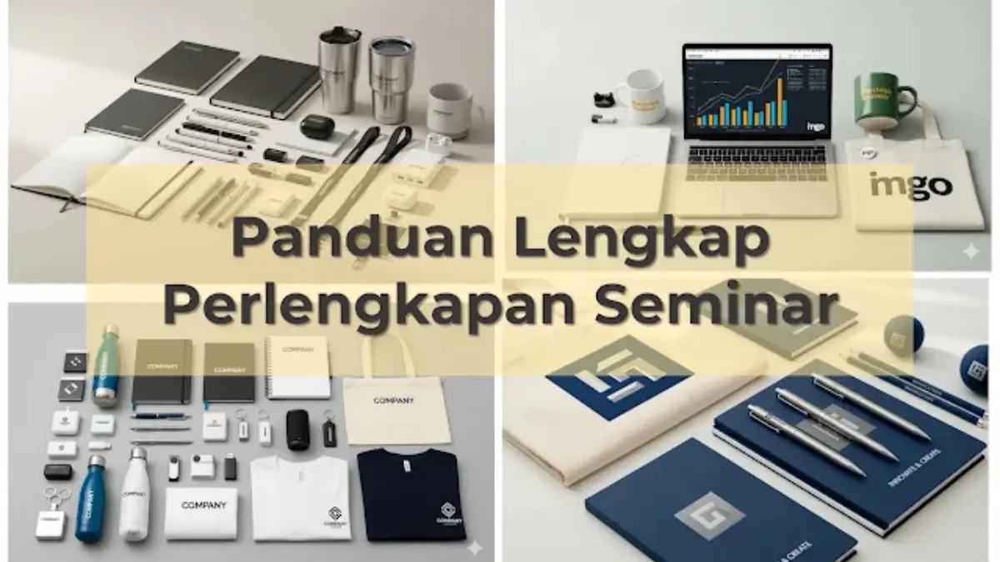

Corporate Gifts ID - Perlengkapan seminar offline yang wajib disiapkan panitia terbagi dalam dua pilar utama: perlengkapan teknis seperti proyektor kecerahan tinggi, sound system, dan mikrofon nirkabel, serta perlengkapan non-teknis seperti meja registrasi, dekorasi backdrop, dan paket seminar kit untuk peserta. Kesiapan menyeluruh pada kedua aspek ini menjadi penentu utama kelancaran alur acara sekaligus menciptakan persepsi profesionalitas di mata pembicara dan tamu undangan.
Menyelenggarakan konferensi atau seminar tatap muka membutuhkan sinkronisasi kerja yang presisi. Panduan ini menyajikan checklist komprehensif bagi panitia pelaksana untuk memitigasi risiko teknis dan menjamin kepuasan peserta dari awal hingga penutupan sesi.
Poin Kunci Kesiapan Perlengkapan Seminar Offline:
- Mitigasi Gangguan Teknis: Uji fungsi perangkat display, kabel konverter display, dan kelistrikan pada gladi resik H-1.
- Standarisasi Area Registrasi: Memastikan barcode scanner, tanda pengenal peserta (ID card), dan daftar hadir tertata rapi.
- Branding Melalui Seminar Kit: Menggabungkan item fungsional seperti tote bag, notebook, dan pulpen untuk pengingat jangka panjang.
- Manajemen Waktu Pengadaan: Memesan cinderamata dan materi cetak 3-4 minggu sebelum acara guna menghindari keterlambatan ekspedisi.
Mengapa Kesiapan Perlengkapan Seminar Itu Sangat Krusial?
Di era interaksi langsung yang dinamis, peserta menaruh ekspektasi tinggi terhadap kualitas penyelenggaraan event. Kesiapan perlengkapan seminar memberikan dampak langsung terhadap kredibilitas institusi penyelenggara:
- Mencegah Kegagalan Teknis Fatal: Kendala seperti mikrofon yang mendengung atau presentasi yang tidak tampil di layar proyektor dapat merusak fokus audiens dan ritme pembicara.
- Membangun Persepsi Profesionalisme: Penataan tata ruang yang rapi, ketersediaan signage petunjuk arah, dan materi presentasi yang tertata mencerminkan standar manajemen acara kelas atas.
- Menciptakan Pengalaman Positif Peserta: Fasilitas fisik yang nyaman dipadukan dengan seminar kit fungsional membuat audiens merasa dihargai atas investasi waktu yang mereka berikan.
2 Kategori Utama Perlengkapan Seminar: Teknis & Non-Teknis
Untuk memudahkan pembagian tugas divisi operasional panitia, seluruh inventaris perlengkapan dikelompokkan ke dalam dua ranah kerja:
1. Perlengkapan Teknis: Panggung dan Audio-Visual (AV)
Divisi perlengkapan teknis bertanggung jawab penuh atas kelancaran transfer materi dari narasumber ke audiens:
- Proyektor & Layar Lebar: Pilih proyektor dengan kapasitas minimal 3.500 hingga 5.000 ANSI Lumens untuk ruangan auditorium atau ballroom hotel.
- Sistem Tata Suara (Sound System): Siapkan mixer audio berkualitas, speaker aktif terdistribusi merata, dan minimal 3-4 mikrofon wireless (untuk pemateri, moderator, MC, dan sesi tanya jawab audiens).
- Laptop Operator & Wireless Presenter (Clicker): Sediakan pointer laser dengan baterai baru agar narasumber leluasa berpindah slide.
- Konverter Display & Kabel Cadangan: Siapkan adaptor USB-C to HDMI, DisplayPort, kabel roll ekstensi daya, serta jaringan Wi-Fi/LAN berkecepatan stabil.

Penyusunan paket seminar kit, lanyard ID card, dan perlengkapan registrasi yang terorganisir mempercepat alur kedatangan peserta.
2. Perlengkapan Non-Teknis: Area Registrasi, Branding & Peserta
Divisi non-teknis berfokus pada kenyamanan fisik audiens dan identitas visual acara:
- Meja Registrasi & Check-in: Dilengkapi lembar presensi, alat tulis cadangan, laptop registrasi, dan wadah distribusi suvenir.
- Identitas Peserta (Badge & Lanyard): Lanyard printing custom dengan ID card berkode warna untuk membedakan kategori peserta, VIP, dan panitia.
- Branding & Dekorasi Ruangan: Backdrop panggung utama, standing roll banner jadwal acara, photobooth sponsor, dan penunjuk arah lorong.
- Perlengkapan Hospitality: Kotak P3K, dispenser air mineral galon ramah lingkungan, dan wadah sampah terpilah.
Tabel Checklist Perlengkapan Seminar Offline Lengkap
Gunakan matriks checklist berikut untuk melakukan verifikasi silang inventaris perlengkapan sebelum pelaksanaan gladi bersih:
| Item Perlengkapan | Kategori | Spesifikasi Minimum | Penanggung Jawab | Status Verifikasi |
|---|---|---|---|---|
| Proyektor & Layar Motorized | Teknis AV | 4.000 ANSI Lumens, rasio 16:9 | Divisi Perlengkapan | Wajib H-1 |
| Set Mikrofon Wireless | Teknis Audio | 4 unit + 8 baterai cadangan AA | Teknisi Sound Venue | Wajib H-1 |
| Pointer Presentasi & Konverter | Teknis AV | Wireless laser pointer, hub USB-C/HDMI | Operator Panggung | Wajib H-1 |
| Paket Seminar Kit Peserta | Non-Teknis | Goodie bag, blocknote A5, pulpen metal | Divisi Acara / Konsumsi | Tersedia H-3 |
| Lanyard & Name Tag Peserta | Non-Teknis | Tali lanyard printing 2 cm + card holder | Divisi Registrasi | Tersedia H-2 |
| Backdrop & Standing Banner | Branding | Flexi Korea 440 gr anti-glare | Divisi Publikasi & Dekorasi | Terpasang H-1 |
Seminar Kit sebagai Representasi Wajah dan Branding Acara
Di antara seluruh elemen non-teknis, seminar kit memegang peranan paling strategis karena merupakan benda berwujud fisik yang dibawa pulang oleh peserta. Paket cinderamata yang dikurasi dengan cermat bertindak sebagai media pengingat merek (brand recall) yang terus bekerja berminggu-minggu setelah seminar usai.
Paket seminar kit standar yang ideal umumnya terdiri dari:
- Wadah Utama: Tote bag kanvas berlogo atau tas spunbond ramah lingkungan untuk memuat seluruh berkas materi.
- Perlengkapan Mencatat: Blocknote spiral custom dan pulpen metal grafir laser untuk menunjang aktivitas peserta selama seminar.
- Souvenir Fungsional Tambahan: Tumbler stainless steel atau flashdisk kartu berlogo yang memuat rangkuman materi e-book narasumber.
Timeline Ideal Persiapan Perlengkapan Event (H-90 hingga H-1)
Manajemen waktu yang sistematis menghindarkan panitia dari kepanikan menjelang hari H. Ikuti tahapan waktu persiapan standar berikut:
- H-90 s.d. H-60 (2-3 Bulan Sebelum): Penentuan konsep acara, penyusunan anggaran, survei spesifikasi fasilitas teknis venue, dan kurasi calon pembicara.
- H-60 s.d. H-30 (1-2 Bulan Sebelum): Finalisasi materi desain grafis branding, pemesanan paket seminar kit ke vendor B2B resmi seperti CorporateGifts.ID, serta pembukaan registrasi peserta.
- H-14 (2 Minggu Sebelum): Re-konfirmasi seluruh logistik pengiriman suvenir, verifikasi jumlah final pesanan, dan penataan rundown teknis AV.
- H-1 (Satu Hari Sebelum): Gladi bersih panggung, sound check menyeluruh, pengujian konektor laptop, dan penataan paket seminar kit di meja registrasi.
Pertanyaan Seputar Perlengkapan Seminar (FAQ)
Kesimpulan dan Solusi Pengadaan Seminar Kit B2B
Keberhasilan penyelenggaraan seminar offline terletak pada kombinasi harmonis antara keandalan sistem teknis panggung dan kualitas fasilitas non-teknis peserta. Melalui eksekusi checklist yang terstruktur, panitia dapat menyuguhkan pengalaman acara yang berkelas, berkesan, dan memperkuat citra positif institusi.
Permudah persiapan cinderamata event Anda bersama CorporateGifts.ID. Temukan puluhan paket suvenir di katalog produk resmi kami atau konsultasikan kebutuhan kustomisasi Anda melalui formulir permintaan penawaran resmi untuk mendapatkan proposal harga B2B dan mockup visual cuma-cuma.